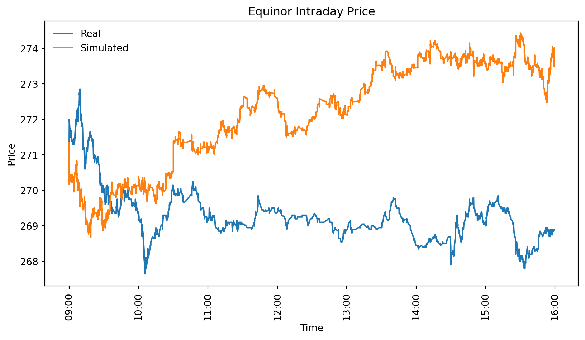

import numpy as np
import matplotlib.pyplot as plt
X = 105 # strike price
# Plot the cash flow
def create_canvas(title):
S = np.linspace(80, 120, 100)
# Create figure and axis objects
fig, ax = plt.subplots(figsize=(8, 5))
# Plot the call option payoff
ax.axhline(0, color='black', linewidth=0.5,
linestyle='--')
ax.axvline(X, color='red', linestyle='--',
label=f"Strike Price (X={X})")
# Labels and title
ax.set_xlabel("Stock Price (S)")
ax.set_ylabel("Payoff")
ax.set_title(title)
ax.legend()
# Return figure, axis, and stock price
return ax, S
ax, S = create_canvas("Cash Flow of a Call Option")
call_payoff = np.maximum(S - X, 0) #call option payoff
ax.plot(S, call_payoff, label="Call Option Payoff",
linewidth=2)Derivatives
This note provides an introduction to derivative pricing. In finance, a derivative is an asset or contract whose value depends on another asset. Consequently, the value of a derivative is a function of the underlying asset’s value. If the value of the underlying share is known, the exercise value of an option can be determined immediately.
One of the most common types of derivatives is options. We will begin by exploring how options are priced and later demonstrate how the principles of option pricing extend to a wide range of other derivatives.
Options
An option is a right but not an obligation to buy or sell an asset for a certain price. Options can be used for both hedging as well as speculation.
The cash flow from an option
There are mainly two types of options - put and call options. A call option gives you the right to buy one share at a fixed price sometime in the future. Let us say that the price agreed upon for an Equinor share is 105. This is called the strike price or exercise price. If the share price is 115 today, you can take advantage of your right to buy it for 105 and sell it in the market for 115. The value of the option is then 15.
However, if the market price is 95, it would be pointless to buy the stock for 105. Since you do not have any obligation to buy it, you would not exercise your right since that would lead to a certain loss. Therefore, the option price can never be negative, since the right to buy will never be exercised if it leads to a loss. Hence, if C is the value of the call, S the value of the stock, and X the strike price at the terminal date, we have
\[ C = \max(S - X, 0) \tag{1}\]
The share price is 115 option holder is thus left with \[ = \max(115-105, 0) = 10 \tag{2}\] But if the price falls to 95, the option loses its entire value \[ = \max(95-105, 0) = 0 \tag{3}\]
Let us draw this up in a chart where X is the strike price, with a python function giving the maximum betseen the current share price and \(S-X\)
Such drawings of the cash flow are called profit charts.
We have now examined how a call option works. A put option, on the other hand, is the right but not the obligation to sell an asset at a specified price. This means the option holder benefits from a falling share price and receives the difference between the market price S and the strike price X when the market price is lower than X. If the price is higher, the option has no value, and the owner gains nothing.
This is illustrated in Figure 2. To represent the put option, we simply modify the function from np.maximum(S - X, 0) to np.maximum(X - S, 0), reflecting the fact that the option gains value when the stock price decreases.
ax, S = create_canvas("Cash Flow of a Put Option")
put_payoff = np.maximum(X - S, 0) #put option payoff
ax.plot(S, put_payoff, label="Put Option Payoff",
linewidth=2)Thus, we see that the immediate exercise value of an option is the difference between the share price and the exercise price X. In the case of a put option, there is no payment when the share price is greater than X, while for a call option, the option is worthless when the stock price is lower than X.
Value before expiration
In general, it is never advantageous to exercise an option early, before the expiration date. This is because an option always has some value beyond its immediate exercise value, as there is always a chance it will become more valuable. This is due to a principle known as “Jensen’s Inequality” (Jensen 1906). It states that the mean of a convex function is always higher than the function of the mean.
This is illustrated in Figure 3. Here, we see that if the stock price can take two values, 95 and 115, the option value at the mean of these two points is zero, since this corresponds to the exercise price. However, if we take the mean of the call function values, it is the average of 15 and 0, which equals 7.5. Hence, the mean of a convex function is higher than the function at the mean.
ax, S = create_canvas("Jensens inequality")
call_payoff = np.maximum(S - X, 0) #call option payoff
ax.plot(S, call_payoff, label="Call Option Payoff",
linewidth=2)
# Generate two stock prices, one to the left and one
# to the right of the strike price
S_left = 95 # 5 units below strike price
S_right = 115 # 15 units above strike price
# Compute corresponding payoffs
payoff_left = np.maximum(S_left-X, 0)
payoff_right = np.maximum(S_right - X, 0)
# Compute mean stock price and corresponding mean
# payoff
S_mean = (S_left + S_right) / 2
payoff_mean = (payoff_left + payoff_right) / 2
# Add scatter points illustrating the two sample
# payoffs
ax.scatter([S_left, S_right],[payoff_left,payoff_right],
color='blue', label="Sampled Payoffs", zorder=3)
# Draw a line between the two points to indicate the
# mean of
# payoffs
ax.plot([S_left,S_right], [payoff_left,payoff_right],
color='blue', linestyle='dashed')
# Scatter point for the payoff at the mean stock price
ax.scatter(S_mean, payoff_mean, color='blue',
marker='X', label="Mean of call payoff", zorder=4)
ax.scatter(S_mean, 0, color='red',
marker='X', label="Call payoff of mean", zorder=4)
# Annotate points
ax.text(S_mean - 1, payoff_mean, "E[call_payoff(S)]",
ha='right',
fontsize=10,
color='blue')
ax.text(106, 1, "{",
ha='right',
fontsize=90,
color='grey',
fontweight='ultralight',
fontname="serif")
ax.text(102, 2, "Intrinsic value",
ha='right',
fontsize=10)
ax.text(S_mean + 1, 0.5, "call_payoff(E[S])",
ha='left',
fontsize=10,
color='red')
# Show updated plot
ax.legend()This means that if there is a long time until the expiration date, an option will still have some value, even if the price is lower than the exercise price, because there is always a possibility that the option will become profitable before it expires. As a result, the value of an option is higher before the expiration date than at the expiration date.
Notation
The value of a call option before expiration is denoted as \(C_t\), while the value of a put option is denoted as \(P_t\). Sometimes, it is useful to have a general symbol for the option price, regardless of whether it is a put or a call. In such cases, the general value of an option or derivative is represented as \(f_t\). The stock price is denoted as \(S_t\), and the exercise price is \(X\) (exercise value). The variable \(t\) represents the time since the option was issued, measured in years. For example, if the option was issued three months ago, then \(t = \frac{1}{4}\).
The buyer has the right to exercise the option for a limited period. The time when the option expires is called the expiration date and is represented by capital \(T\). If the option lasts for one year, then \(T = 1\). The exercise values of the options at expiration are denoted as \(C_T\) or \(P_T\).
Black and Scholes formula
So, how much is an option worth? The relationship between an option’s value and the underlying stock price makes it possible to derive a formula that determines the value of the right the option represents. This formula, discovered in the early 1970s, is known as the Black-Scholes-Merton option-pricing formula Merton et al. (1971). However, it was later found to be closely related to earlier work by Bachelier (1900).
The Black-Scholes formula is one of the most significant innovations in finance and is used daily in global financial markets. The economists behind the formula were awarded the Nobel Prize in 1997 for their contribution. While we will return to the details of the Black-Scholes formula later, you might be interested in seeing how it is calculated now.
In Figure 4, we see the Black-Scholes price overlaid on the profit chart.
from scipy.stats import norm
ax, S = create_canvas("Black & Scholes price")
call_payoff = np.maximum(S - X, 0) #call option payoff
ax.plot(S, call_payoff,
label="Call Option value at expiration",
linewidth=2)
def black_scholes_call(S, X, T, r, sigma):
d1 = (
(np.log(S / X) + (r + 0.5 * sigma**2) * T)
/ (sigma * np.sqrt(T))
)
d2 = d1 - sigma * np.sqrt(T)
return (S * norm.cdf(d1) - X * np.exp(-r * T)
* norm.cdf(d2))
ax.text(106, 1.5 , "{", ha='right', fontsize=120,
color='grey',
fontweight='ultralight',
fontname="serif")
ax.text(101, 2.4 , "Intrinsic value", ha='right',
fontsize=10)
ax.text(110, 13 , "$C_t$", ha='left',
fontsize=12)
ax.text(110, 7 , "$C_T$", ha='left', fontsize=12)
ax.plot(S,black_scholes_call(S, X, 0.25, 0.05, 0.37),
label="Black and Scholes option price today")
ax.legend()The “intrinsic value” here, is then the Black and Scholes fair value in excess of the exercise price (value at expiration).
Problems:
Change the Black and Scholes figure to show a put option. The formula for the Black and Scholes put is \[ P(S, X, T, r, \sigma) = X e^{-rT} \Phi(-d_2) - S \Phi(-d_1) \tag{4}\] where \[ d_1 = \frac{\ln(S / X) + \left(r + \frac{1}{2} \sigma^2 \right)T}{\sigma \sqrt{T}} \tag{5}\] and \[ d_2 = d_1 - \sigma \sqrt{T} \tag{6}\]
\(\Phi\) is the cumulative standard normal distribution function.
Which of the arguments in the Black and Scholes formula are most difficult to estimate?
European and American options
Sometimes an option can be exercised at any time up to the terminal date. We therefore distinguish between two types of options:
- American option: The option holder can choose whether to exercise the option at any time before the terminal date.
- European option: The option can only be exercised on the terminal date.
In addition to buying options, investors may also sell options short in the market, a process known as issuing options. In this case, the cash flow will be the exact opposite of what the buyer receives, as illustrated below. The buyer (owner) receives the same cash flow as previously shown, while the seller has an obligation rather than a right. Therefore, the issuer’s cash flow is a mirror image of the buyer’s.
Put-call parity
As you may have noticed, a put option always provides a payout when a call option does not (and vice versa), assuming the strike price is the same. By combining both types of options, an investor can create a cash flow proportional to the share price, regardless of how the share price changes. This relationship between a put, a call, and the share price is known as put-call parity:
\[ S_{t} - PV_{t}(X) = C_{t} - P_{t} \tag{7}\]
Where \(PV_{t}(X)\) is the present value at time \(t\). As we see, this formula applies at any time, including before the terminal date \(T\).
In the figure below, we see the cash flow for a call option (\(+C_t\)) and an issued put (\(-P_t\)) plotted. The dotted line represents the combined value of these two positions, that is, the value of \(C_t - P_t\), along with the stock price \(S\) itself.
If the date is before the terminal date, we use the present value of the exercise price at that time, \(PV_{t}(X)\). However, for now, we assume the terminal exercise price \(X\) that has been used throughout.
The call-put and \(S - X\) positions in Figure 5 are shifted up and down by 1 to make all lines visible.
ax, S = create_canvas("Put-call parity")
call_payoff = np.maximum(S - X, 0) #call option payoff
put_payoff = np.maximum(X-S, 0) #call option payoff
ax.plot(S, call_payoff, label="Call Option Payoff",
linewidth=3)
ax.plot(S, -put_payoff, label="Put Option Payoff",
linewidth=3)
ax.plot(S, call_payoff-put_payoff + 1,
label="$C_t-P_t$ Payoff", linewidth=3)
ax.plot(S, S-X - 1, label="$S-X$ Payoff", linewidth=3)
ax.legend()The minus sign before the put option means that we hold it short. This means that we sell it. In financial markets, we do not need to own an asset to sell it. Instead, we can short it, which involves borrowing the asset and later returning it.
For example, we may borrow a stock for three months, sell it in the market, and hope that its price decreases before we buy it back to return it. Shorting means that we hold a negative amount of the asset and are speculating on a price decrease.
For options, short selling can also mean issuing the option. Most online brokers allow traders to sell options without owning them first, provided that they post some collateral. This effectively means that the trader issues the option.
Combining options
By combining a put and a call, it is possible to replicate the cash flows of buying a share and taking out a loan. Additionally, one can buy and sell puts and calls with different exercise prices to create customized cash flows at different share prices.
In Figure 6, we have plotted the net cash flow from issuing both a call option (call) and a put option (put).
ax, S = create_canvas("Issuing a call and put")
call_payoff = np.maximum(S - X, 0) #call option payoff
put_payoff = np.maximum(X-S, 0) #call option payoff
ax.plot(S, -call_payoff-put_payoff+8,
label="Issued call and put", linewidth=3)
ax.legend()As you can see, the options are slightly shifted up compared to how we have drawn them before. The reason for this is that we have now included the sales price of the options (the intrinsic value), which varies depending on the share price at the time. In this example, the share price is higher than the exercise price.
Since we have taken the intrinsic value of the option into account, we see that the option will provide a cash flow as long as the stock price is between a and b. This combination can therefore be used to bet that the price of a stock will remain within a certain range. For example, if one expects Equinor’s share price to be exactly 105 in six months, one could issue a put and a call between 95 and 105.
Similarly, options can be used to bet that the price will deviate from a specific target, either positively or negatively. You can draw the cash flow for this case yourself. The only limit to the cash flows that can be created with options is one’s imagination.
Problem:
Try different combinations of call and put options, including those with different exercise values, to create sophisticated cash flows.
Binomial options
We will not delve deeply into the mathematics of derivatives in this course. Instead, the focus will be on developing an understanding of the fundamental principle behind derivative pricing—risk-neutral expectation—and how it can be used as a tool to price any derivative or contract written on an underlying asset.
To illustrate this principle, it is helpful to examine how binomial options are priced.
A binomial option is an option where the underlying price can take only two possible values. While this may seem like an oversimplification, we will soon see that this basic model provides valuable insight into the pricing of options in general.
The model
We will now consider a simplified scenario where the share price can take only two values in the future. We assume as previously that the Equinor share may either rise to 115 or fall to 95 from its current price of 100 kroner. The interest rate is 5%.
Further, assume that we need to determine the price of a call option with an exercise price of 105. This means that the owner has the right to receive 15 if the stock price rises, but nothing otherwise. Graphically, the problem can be represented as follows:
The task is to determine the current option price, denoted as \(f_0\) in the figure above. We use \(f_0\) instead of \(c_0\) because we aim to develop a general pricing method that applies to both put and call options. In fact, this method can be used to price any derivative.
The key to solving this problem is recognizing that the same cash flow can be replicated by borrowing money to finance a fraction of the shares that the option delivers, regardless of whether the price goes up or down. The reason this replication is possible is that an option’s value is a function of the stock price. When the stock is worth 115, the option will always be worth 15. When the stock is worth 95, the option is always worthless. By substituting the stock price into this function, we can determine the value of the option.
Now, suppose we borrow money to purchase a certain number of shares per option, denoted by \(\Delta\). For example, if we buy half as many shares as options, then \(\Delta = \frac{1}{2}\). Since the stock price is 100, we buy shares worth:
\[ 100 \cdot \Delta = 50 \tag{8}\]
per option. After half a year (\(T = \frac{1}{2}\)), we must repay the loan with interest, so the total repayment amount will be:
\[ 100 \cdot 1.05^{\tfrac{1}{2}} \cdot \Delta \tag{9}\]
If the share price rises, our account balance will then show a surplus of:
\[ \Delta \cdot (115 - 100 \cdot 1.05^{\tfrac{1}{2}}) \tag{10}\]
Similarly, we receive 15 on the option if the stock price goes up. If we buy the option for \(f_0\) today and fund it with a loan equal amount \(f_0\), we will next year have:
\[ 10 - f_0 \cdot 1.05^{\tfrac{1}{2}} \tag{11}\]
We can now select an appropriate proportion of shares \(\Delta\) so that these two transactions provide identical cash flows. This means that we can find a fraction of shares \(\Delta\) so that the leveraged purchase of \(\Delta\) shares give the same return as a similar purchase of the option by solving the following equation for \(\Delta\): \[ \Delta \cdot (115 - 100 \cdot 1.05^{\tfrac{1}{2}}) = 10 - f_0 \cdot 1.05^{\tfrac{1}{2}} \tag{12}\]
If the stock goes down, we can reason in exactly the same way. We get a loss of
\[ \Delta \cdot (95 - 100 \cdot 1.05^{\frac{1}{2}}) \tag{13}\]
on the share and a loss of
\[ 0 - f_0 \cdot 1.05^{\frac{1}{2}} \tag{14}\]
on the option. We require that the investments should provide the same return, so we can set an equality between them:
\[ \Delta \cdot (95 - 100 \cdot 1.05^{\frac{1}{2}}) = 0 - f_0 \cdot 1.05^{\frac{1}{2}} \tag{15}\]
We now have two relatively simple equations with two unknowns, \(\Delta\) and \(f_0\), which we can solve using sympy:
# Re-import necessary libraries since execution state was reset
import sympy as sp
from IPython.display import display, Markdown
# Define symbols
Delta, f0 = sp.symbols('Delta f0')
# Define the equations
eq1 = sp.Eq(Delta * (95 - 100 * 1.05**(1/2)), 0 - f0 * 1.05**(1/2))
eq2 = sp.Eq(Delta * (115 - 100 * 1.05**(1/2)), 10 - f0 * 1.05**(1/2))
# Solve for Delta and f0
sol = sp.solve((eq1, eq2), (Delta, f0))
# Display the solution
display(Markdown(f"$f_0={sol[f0]}$"))
display(Markdown(f"$\\Delta={sol[Delta]}$"))\(f_0=3.64474653494468\)
\(\Delta=0.500000000000000\)
\[ \Delta = \tfrac{1}{2} \tag{16}\]
and
\[ f_0 \approx 3.645 \tag{17}\]
What we have done is find a combination of loans and equity investments that produce the same return as an equivalent position in the option. This is the fundamental principle behind all option pricing.
Thus, it is possible to achieve the same cash flows as the option by holding a fraction \(\Delta\) of the share. This principle applies generally—an option can always be replicated by holding a portion of the stock. In fact, many banks profit by issuing options and hedging them through this replication strategy.
A general binomial formula
When the stock and option can only take two values, we call this the binomial option pricing model. While we could use the method above to calculate the option price every time, it is much easier to apply a more general formula. Let us introduce the following notation:
| Today: | Expiration: | Stock up | Stock down | |
|---|---|---|---|---|
| The share price | \(S_0\) | \(S_u\) | \(S_d\) | |
| Option Value | \(f_0\) | \(f_u\) | \(f_d\) | |
| Price Ratio \(S_T/S_0\) | \(u = S_u/S_0\) | \(d = S_d/S_0\) |
Here, the subscripts u and d represent the up and down movements of the stock, respectively. We use a general variable \(f\) that can stand for both a put (\(P\)) and a call option (\(C\)). Additionally, we define two variables, \(u\) and \(d\), which represent the relative movement of the stock price when it increases or decreases.
In our example, we are considering an option with a strike price \(X = 105\), where the stock can either rise to \(S_u = 115\) or fall to \(S_d = 95\) from \(S_0=100\). The interest rate is \(r=0.05\) and time to expiration is \(T=0.5\), so
S_u = 115
S_d = 95
S_0 = 100
f_u = 10
f_d = 0
u = S_u/S_0
d = S_d/S_0
r = 0.05
T = 0.5Now, instead of using specific numbers, we generalize the approach from the previous section to find \(f_0\).
As before, the investor buys \(\Delta\) shares and borrows \(\Delta \cdot S_0\) to finance the purchase. Taking interest into account, the investor must repay
\[ \Delta \cdot S_0 \cdot (1 + r)^T \tag{18}\]
after one year. If the stock price rises, the investor can sell the stock for \(S_u\) in the market. The resulting profit will be:
\[ \Delta\cdot(S_u - S_0 \cdot(1+r)^T) \tag{19}\]
This should match the profit gained from financing the option purchase with a loan. The option provides a payoff of \(f_u\) when the stock price rises. The loan that must be repaid consists of the initial purchase price plus interest, which is:
\[ f_0 \cdot (1 + r)^T \tag{20}\]
Thus, the profit from the leveraged option purchase is:
\[ f_u - f_0\cdot(1+r)^T \tag{21}\]
As before, we choose now a share of shares so that the profits of shares and option price match. That is, we find a \(\Delta\) such that: \[ \Delta\cdot(S_u - S_0 \cdot(1+r)^T) = f_u - f_0\cdot(1+r)^T \tag{22}\]
Exactly the same argument applies if the stock goes down, so in that case we need only replace subscript u with d:
\[ \Delta\cdot(S_d - S_0 \cdot(1+r)^T) = f_d - f_0\cdot(1+r)^T \tag{23}\]
Risk-neutral probability
As in the previous section, we have two unknowns: the proportion of \(\Delta\) shares and the option price \(f\), which can be easily solved. We will not go into the full derivation of the solution here. However, it turns out that the solution can be expressed in a relatively simple way using a variable \(q\), known as the “risk-neutral probability.” It is calculated as:
\[ q=\frac{(1+r)^T-d}{u-d} \tag{24}\]
\(q\) is really just a tool for calculating the option price and is not actually a probability. However, it shares a key property with real probabilities in that it always lies between zero and one. We use it to compute an expectation in the same way as we do with normal probabilities.
It is called “risk-neutral” because if we apply it to the terminal values of the underlying stock (\(S_u\) and \(S_d\)), the expected value equals the current stock price plus interest:
\[ \mathbb{E}_q[S_T] = S_u \cdot q + S_d \cdot (1-q) = S_0 \cdot (1+r)^T \tag{25}\]
We can verify this with sympy:
# Define symbols
Su, Sd, S0, r, T, q = sp.symbols('Su Sd S0 r T q')
u = Su/S0
d = Sd/S0
q = ((1+r)**T-d)/(u-d)
# The expected stock price under risk neutral probability
sp.simplify(Su * q + Sd * (1 - q))\(\displaystyle S_{0} \left(r + 1\right)^{T}\)
Once we find \(q\), the option price is simply given as the present value of the expected option value at exercise, where we use the risk-neutral probability \(q\) as the probability of “up” and “down”.
The option price today is therefore:
\[ f_0=\frac{q \cdot f_u + (1-q) \cdot f_d}{(1+r)^T} \tag{26}\]
We have discounted the expected value because \(f_u\) and \(f_d\) are not present cash flows but represent cash flows at the terminal time \(T\).
The process for calculating the price of a binomial option is as follows:
- Calculate \(u\) and \(d\)
- Calculate the risk-neutral probability \(q\) (24)
- Calculate the present value of the expected option value using probability \(q\) (26)
Although we will not delve into the mathematics of more complex payoffs, this illustrates a remarkably general principle: any derivative — a financial security whose value depends on shares or other underlying assets — can be priced using a probability distribution that ensures a risk-neutral return for the stock.
Thus, the price of any derivative can be determined by defining an appropriate risk-neutral probability distribution.
Additionally, note how we defined the option—not by first specifying the exercise price, but simply by defining \(f_u\) and \(f_d\). This demonstrates that our pricing method does not rely on the specific structure of an option. Instead, all that is required is the derivative’s payoff for a given payoff of the underlying asset.
In essence, this provides a general framework for pricing any contract written on an asset.
Option delta
Another important quantity is \(\Delta\), which represents the number of shares needed to replicate an option. It turns out that the delta is:
\[ \Delta=\frac{f_u-f_d}{S_u-S_d} \tag{27}\]
The \(\Delta\) is useful because it indicates how many shares you must buy to replicate the option. Since holding more shares increases risk, delta also serves as a measure of the risk inherent in the option.
Delta can also be used to achieve the same exposure as holding the underlying derivative. By frequently rebalancing so that your holdings in the underlying asset adjust proportionally to the delta—typically on a daily or weekly basis—your cash flow will closely mimic the exposure of the derivative.
This strategy is known as “delta hedging”, and it is the method banks use when issuing derivatives. By continuously adjusting their positions in the underlying asset, banks hedge these products to ensure they do not take on financial risk themselves.
Using the General Binomial Formula
Let us apply the numbers from our example to the general binomial formula to calculate the value of the option. We will then compare the result with the solutions \(\Delta = \tfrac{1}{2}\) and \(f_0 \approx 3.645\) obtained from solving the equations (12) and (15).
from IPython.display import display, Markdown
S_u = 115
S_d = 95
S_0 = 100
f_u = 10
f_d = 0
u = S_u/S_0
d = S_d/S_0
r = 0.05
T = 0.5
q = ((1+r)**T-d)/(u-d)
f0 = (q*f_u+(1-q)*f_d)/((1+r)**T)
delta = (f_u-f_d)/(S_u-S_d)
display(Markdown(f"$f_0={f0}$"))
display(Markdown(f"$\\Delta={delta}$"))\(f_0=3.6447465349446806\)
\(\Delta=0.5\)
Wich we see corresponds with the previous calculations.
The stock price process
Before we explore how contracts on assets with continuous rather than binomial prices are valued, we must first understand how stock prices are modeled in modern finance. This modeling approach provides a practical way to describe stock price movements in mathematical terms.
Let us begin by plotting some actual intraday prices. The blue line in Figure 7 shows a snapshot of the intraday price movements for the Norwegian company Equinor on March 24, 2025.
import pandas as pd
from matplotlib import pyplot as plt
import matplotlib.dates as mdates
import numpy as np
# Read the data
df = pd.read_csv('data/'
'equinor_intraday_240325.csv')
df['TID'] = pd.to_datetime(df['TID'],
format='%H:%M:%S')
df = df.sort_values('TID')
df=df[df['TID']>=pd.to_datetime('9:00:00',
format='%H:%M:%S')]
df=df[df['TID']<=pd.to_datetime('16:00:00',
format='%H:%M:%S')]
def create_canvas():
# Create figure and axis objects
fig, ax = plt.subplots(figsize=(10, 5))
# Set major ticks to round hours every hour
ax.xaxis.set_major_locator(mdates.HourLocator(interval=1))
ax.xaxis.set_major_formatter(mdates.DateFormatter('%H:%M'))
# Rotate x-axis labels for readability
plt.setp(ax.xaxis.get_majorticklabels(), rotation=90)
# Labels and title
ax.set_xlabel('Time')
ax.set_ylabel('Price')
ax.set_title('Equinor Intraday Price')
return ax
ax = create_canvas()
#Plot the data
ax.plot(df['TID'], df['PRIS'])We observe that the price appears to move almost continuously. However, if you modify the time window in the code—for example, from 13:00 to 13:05—you will notice that the movements are not continuous at all, but rather a sequence of discrete price changes.
Additionally, we see that stock prices take only certain values. For Equinor, the smallest price increment is NOK 0.05, meaning that stock prices move in discrete steps both in time and value. Despite this, assuming continuous time and continuous prices is mathematically convenient and serves as a reasonable approximation, especially over longer time intervals, such as an hour or more of trading.
Therefore, stock price movements are often modeled as a continuous process, which is the approach we will take in this lecture.
Modeling the stock price
Let us now examine how financial economists model stock prices to replicate actual price movements as closely as possible. In Figure 8, a stock price process is simulated using the standard approach in finance and presented alongside the actual stock price of Equinor.
#Simulation:
#Calculating the mean and volatility
mu = np.log(df['PRIS']).diff().mean()
sigma = np.log(df['PRIS']).diff().std()
#The Wiener process
dlnS = (mu - 0.5 * sigma**2
+ sigma * np.random.randn(len(df)))
#Ensuring the proces starts at the same point,
#and calulating the level
dlnS[0] = 0
df['PRIS_sim'] = (df['PRIS'].iloc[0]
* np.exp(np.cumsum(dlnS)))
#plotting:
ax = create_canvas()
ax.plot(df['TID'], df['PRIS'])
ax.plot(df['TID'], df['PRIS_sim'])
ax.legend(['Real', 'Simulated'], frameon=False)

The orange line in Figure 8 represents simulated prices, meaning that each time the code is executed, the orange path will vary.
You can see this from the formula in Figure 8, but we will now take a closer look at how stock prices are typically modeled in finance. We start with a model based on the relative geometric change in stock prices. By relative geometric change, we mean to the log difference, defined as:
\[ \Delta \log(S_t) = \log(S_t) - \log(S_{t-1}) = \Delta s_t \tag{28}\]
Alternatively, we could consider the discrete percentage difference:
\[ \Delta S_t / S_t \]
However, using log differences instead of percentage differences has a key advantage: the latter is not symmetric. If a stock price increases by 10% and then decreases by 10%, it does not return to its original level. In contrast, with log differences, a 10% increase followed by a 10% decrease brings the stock price exactly back to its starting point.
Log differences are closely related to continuous compounding and the exponential function. Since the logarithm is the inverse of the exponential function, the following identity holds for any \(x\):
import numpy as np
x = 23.434
np.exp(np.log(x))23.434Thus, if we know the log change \(\Delta s_t\) over a given period, it follows directly from (28) that the stock price at time \(t\) is given by:
\[ S_t = S_0 \cdot e^{s_t} \tag{29}\]
The log change in stock price consists of three key components: drift, volatility correction, and innovation, which will now be explained in more detail:
Innovation
Since stock prices are not fully predictable, we need to introduce a random element. This randomness should be structured so that the variance increases proportionally with time. This assumption is reasonable because it implies that the stock price two months from now will have twice the variance — and thus twice the risk — of the stock price one month from now.
This simple assumption can be expressed as
\[ z_{t} = \varepsilon_{t}\sqrt{t} \tag{30}\]
where \(\varepsilon_{t}\) is standard normally distributed, \(\varepsilon_{t} \sim N(0,1)\), meaning it has a mean of zero and variance of one.
The standard random variable is multiplied by the square root of \(t\), ensuring that:
\[ Var(z_t) = t \tag{31}\]
A random variable that increases in variance with time is called a Wiener Process. The further into the future, the less we know about the stock price.
The actual innovation also has a scale parameter \(\sigma\), so that the innovation to the price becomes:
\[ \sigma \cdot z_t \tag{32}\]
The associated variance is proportional to the time period:
\[ var(\sigma \cdot z_t) = \sigma^2 \cdot t \tag{33}\]
When simulating, we want to draw each innovation in the process \(z_t\), in other words, we want to draw the change in \(z_t\). Change is as usual indicated by \(\Delta\), so that the innovation per observation becomes
\[ \sigma \cdot \Delta z_t \tag{34}\]
The associated variance is then:
\[ var(\sigma \cdot \Delta z_t) = \sigma^2 \cdot \Delta t \tag{35}\]
This means that the variance of each period in the Wiener Process \(z_t\) is directly proportional to the length of the period.
In the specific dataset used for Figure 7, the time intervals between observations vary because the data is based on transaction records. The time period is determined by the actual time elapsed between consecutive data points. However, in most financial models, \(\Delta t\) is typically assumed to be constant.
For simplicity, in the simulation shown in Figure 8, we assume that the time step between observations is fixed at \(\Delta t = 1\). To create a process that closely replicates Equinor’s price movements, we estimate the period volatility using the standard deviation of the log price differences between observations:
sigma = np.log(df['PRIS']).diff().std()The implementation of the innovation term from (34) in the code is then:
sigma * np.random.randn(len(df));Here, np.random.randn(len(df)) generates random draws from a standard normal distribution, representing \(\varepsilon_{t}\), while multiplying by sigma scales the randomness according to the estimated volatility of the stock price.
Drift
The stock price is expected to change by a certain percentage each period. This expectation is captured by a drift term \(\mu\), which represents the average rate of return per time unit. On average, the stock price is expected to increase by \(\mu \Delta t\) in each period.
By combining this deterministic drift term with the stochastic Wiener process, we obtain the full stock price process.
In the code for Figure 7, the drift term is estimated as the mean log price change of Equinor throughout the trading day:
mu = np.log(df['PRIS']).diff().mean()Mathematicaly the drift can be written
\[ \mu \cdot \Delta t \tag{36}\]
In the calculation of Figure 7, \(\Delta t = 1\)
Volatility Correction
If we were to define the change in log price using only the drift and innovation terms, as in (37) and (34), the cumulative log price change from time 0 to \(t\) would be:
\[ s_t = \mu \cdot t + \sigma \cdot z_t \tag{37}\]
Substituting this into the exponential price model from (38) gives:
\[ S_t = S_0 \cdot e^{\mu \cdot t + \sigma \cdot z_t} \tag{38}\]
However, as we previously discussed in Figure 3, this expression ignores the effect of Jensen’s inequality. Because the exponential function is convex, the expected value of \(S_t\) is greater than the expected value of the log price change:
\[ \mathbb{E}[S_t] > S_0 \cdot e^{\mu \cdot t} \tag{39}\]
We do know, however, what accounts for this difference between the expectation of the function and the function of the expectation. By adding a correction term
\[ -\tfrac{1}{2} \sigma^2 t \tag{40}\]
we can adjust for Jensen’s inequality exactly. That is, we know that
\[ \mathbb{E}[S_t] = S_0 \cdot e^{\mu \cdot t - \tfrac{1}{2} \sigma^2 t} \tag{41}\]
Putting It All Together
By combining the innovation term (34), the volatility correction term (40), and the drift component from (37), we arrive at a realistic model for the log change in stock price:
\[ \Delta s_t = \mu \cdot \Delta t - \tfrac{1}{2} \sigma^2 \Delta t + \sigma \cdot \Delta z_t \tag{42}\]
This leads to the full model for the stock price at any point in time:
\[ S_t = S_0 \cdot e^{\mu \cdot t - \tfrac{1}{2} \sigma^2 \cdot t + \sigma \cdot z_t} \tag{43}\]
Using (42), the Python implementation therefore becomes
dlnS = (mu - 0.5 * sigma**2
+ sigma * np.random.randn(len(df)))
df['PRIS_sim'] = (df['PRIS'].iloc[0]
* np.exp(np.cumsum(dlnS)))Here, np.cumsum(dlnS) computes the cumulative sum of log changes across all observations in the dataset, giving the full simulated price path.
Risk neutral pricing
In the original papers, the derivation of the Black and Scholes option pricing formula, uses som pretty fancy math and sophisticated theory. However, if we know that we can price any derivative using risk neutral expectations, it becomes easier to understand how derivatives are priced.
For example the Black-Scholes-Merton option pricing fomula can be obtained by applying risk netural pricing. That involves calculating this integral
\[ f_0 = e^{-rt} \int_{-\infty}^{\infty} \max \left( S_0 e^{(r - \tfrac{1}{2} \sigma^2)t + \sigma \sqrt{t} \epsilon} - X, 0 \right) \phi(\epsilon) d\epsilon \tag{44}\]
Here - \(f_0\) is the valuation - \(e^{-rT}\): Is the contnously compunded discount factor (time value of money). - \(S_t = S_0 e^{(r - \frac{1}{2} \sigma^2)T + \sigma \sqrt{T} \epsilon}\) is the value of the option at time \(t\) - \(X\) is the strike price - \(\phi(\epsilon)\) is the standard normal density function.
We will not go through the calculations in this course, but it turns out that the solution to this integral is the Black-Scholes-Merton call option formula:
\[ C(S, X, T, r, \sigma) = S \Phi(d_1) - X e^{-rT} \Phi(d_2) \tag{45}\]
where
\[ d_1 = \frac{\ln(S / X) + \left(r + \frac{1}{2} \sigma^2 \right)T}{\sigma \sqrt{T}} \tag{46}\]
and
\[ d_2 = d_1 - \sigma \sqrt{T} \tag{47}\]
\(\Phi\) is the cumulative standard normal distribution function.
Here’s an improved version of your section for clarity, flow, and grammar, while keeping the technical content intact:
Numerical Approximation
Knowing that we can price derivatives using risk-neutral expectations means that we can, in principle, determine the fair value of almost any contract written on tradable assets. The expected value is defined as the sum of outcomes (or events) weighted by their probabilities. For example, the expected value of a die roll is:
\[ (1+2+3+4+5+6) \cdot \frac{1}{6} = 3.5 \tag{48}\]
that is, each outcome multiplied by its probability, summed over all outcomes.
As mentioned above, when we are dealing with a continuous distribution such as the normal distribution, the discrete concept of a probability is replaced by the probability density \(\phi(x)\) multiplied by a small interval \(dx\). The outcome is the derivative’s value, and the summation becomes an integral.
However, solving such integrals analytically is often difficult or impossible. In practice, it is therefore common to compute the integral numerically. This involves converting the continuous distribution into a discrete one, allowing us to approximate the integral using a finite sum over discrete probabilities and outcomes.
This discretization means dividing the range of outcomes into intervals and calculating the probability mass in each interval. In other words, we approximate the continuous probability density by a histogram-like representation.
This process is illustrated in Figure 9. Each bar represents the probability of an outcome falling within a given interval. We can then approximate the expected value by multiplying each outcome \(x\) by its associated probability, \(\phi(x) \cdot dx\), where \(dx\) is the interval width. In this case, the range is defined as ±5 standard deviations, divided into 30 intervals.
import numpy as np
import matplotlib.pyplot as plt
from scipy.stats import norm
# Parameters
mu = 0.15 # Risk-free rate
sigma = 0.2 # Volatility
width = 5
N = 30
# Define the range for x
dx = width*sigma/((N-1)*0.5)
x = np.arange(mu - 4*sigma, mu + width*sigma, dx)
x_fine = np.linspace(mu - width*sigma, mu + width*sigma, 1000)
# PDF values
pdf = norm.pdf(x, mu, sigma)
pdf_fine = norm.pdf(x_fine, mu, sigma)
# Plot
plt.figure(figsize=(10, 6))
plt.plot(x_fine, pdf_fine, label='Normal PDF', color='blue')
plt.bar(x, pdf, width=dx, alpha=0.5, align='center', label='PDF * dx (approximation)', edgecolor='black')
plt.title('Numerical Approximation of Expectation using PDF * dx')
plt.xlabel('x')
plt.ylabel('Density')
plt.legend()
plt.grid(True)
plt.tight_layout()
plt.show()A Simple Function for Valuing a Derivative
To compute the expected value of a derivative, we need to evaluate the probability of each small interval on the \(x\)-axis and multiply it by the corresponding derivative payoff. For a simple normally distributed variable, the probability of each interval can be approximated as:
import scipy.stats as stats
p = stats.norm.pdf(x, mu, sigma) * dxHowever, as we saw when modeling the stock price process, the mean is not simply \(\mu\), and the volatility is not simply \(\sigma\). According to Equation Equation 43, after adjusting for the time to maturity and the volatility correction, the mean of the log return becomes:
\[ (\mu - \tfrac{1}{2} \sigma^2) \cdot T \tag{49}\]
Since we are working under the risk-neutral measure, we replace the expected return \(\mu\) with the risk-free rate \(r\), resulting in:
\[ (r - \tfrac{1}{2} \sigma^2) \cdot T \tag{50}\]
The corresponding volatility over the time horizon \(T\) becomes:
\[ \sigma \cdot \sqrt{T} \tag{51}\]
With these substitutions, the discrete risk-neutral probability distribution used to price a derivative is:
import scipy.stats as stats
p = stats.norm.pdf(x, (r - 0.5 * sigma**2) * T, sigma * np.sqrt(T)) * dxUsing this setup, we can now define a simple and general function for computing the risk-neutral expected value of a derivative with terminal payoff \(f(S_T)\):
import numpy as np
import scipy.stats as stats
def derivative_value_risk_neutral(f, S0, sigma, r, T, N=1000, width=5):
"""
Numerically computes the risk-neutral value of a derivative with payoff function f(S_T).
Parameters:
- f: Payoff function f(S_T)
- S0: Initial stock price
- sigma: Volatility
- r: Risk-free interest rate
- T: Time to maturity
- N: Number of intervals for numerical integration
- width: Number of standard deviations to cover on each side
Returns:
- Present value of the derivative
"""
vol_T = sigma * np.sqrt(T)
mu_T = (r - 0.5 * sigma**2) * T
x = np.linspace(-width * vol_T, width * vol_T, N)
dx = x[1] - x[0]
ST = S0 * np.exp(x)
p = stats.norm.pdf(x, mu_T, vol_T) * dx
pv = np.exp(-r * T) * np.sum(f(ST) * p)
return pvThis function allows you to numerically evaluate the fair value of any derivative written on the terminal asset price \(S_T\), using risk-neutral expectations.
import scipy.stats as stats
def derivative_value_risk_neutral(f, S0, sigma, r, T, N = 1000, width = 5):
"Calculates the risk neutral value of f"
x = np.linspace(-width*sigma*(T**0.5), width*sigma*(T**0.5), N)
dx = width*sigma*(T**0.5)/((N-1)*0.5)
p = stats.norm.pdf(x, (r-0.5*sigma**2)*T, sigma*(T**0.5))*dx
pv = np.exp(-r*T)*np.sum(f(S0*np.exp(x))*p)
return pvTesting the derivative valuation function
Now, let us test if this function works. We can do that by comparing it with the known Black&Scholes formula. The following defines the terminal value of the call option, and the Black&Scholes formula:
import scipy.stats as stats
X = 105 # Strike price
def call_option(ST):
# Call option payoff function
return np.maximum(ST - X, 0)
def black_scholes(S0, X, r, sigma, T):
d1 = (np.log(S0/X) + (r + 0.5*sigma**2)*T)/(sigma*(T**0.5))
d2 = d1 - sigma*(T**0.5)
return S0*stats.norm.cdf(d1) - X*np.exp(-r*T)*stats.norm.cdf(d2) import numpy as np
import scipy.integrate as integrate
import scipy.stats as stats
# Define parameters
S0 = 100 # Initial stock price
r = 0.05 # Risk-free rate
sigma = 0.2 # Volatility
T = 1 # Time to maturity (1 year)
f0_num = derivative_value_risk_neutral(call_option, S0, sigma, r, T)
f0_bs = black_scholes(S0, X, r, sigma, T)
print(f"Numerical integral result: {f0_num}")
print(f"Black-Scholes result: {f0_bs}")
# Check if the results are close
assert np.isclose(f0_num, f0_bs, atol=1e-4), "The results are not close!"Numerical integral result: 8.021228881041875
Black-Scholes result: 8.021352235143176As we can see, our discrete valuation function works very well. With this simple approach, we can accurately value any contract written on the terminal asset price \(S_T\).
References
Bachelier, Louis. 1900. Théorie de La Spéculation. Paris: Gauthier-Villars.
Jensen, Johan W. 1906. “Sur Les Fonctions Convexes Et Les Inégalités Entre Les Valeurs Moyennes.” Acta Mathematica 30: 175–93. https://doi.org/10.1007/BF02418571.
Merton, Robert C et al. 1971. “Theory of Rational Option Pricing.”
Scholes, Myron, and Fischer Black. 1973. “The Pricing of Options and Corporate Liabilities.” Journal of Political Economy 81 (3): 637–54.